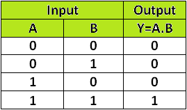

Y= A.B

Figure-1:Logic Symbol of AND Gate

Figure-2:Truth Table of AND Gate
Y= A.B
Figure-1:Logic Symbol of AND Gate
Figure-2:Truth Table of AND Gate
A simple 2-input logic AND gate can be constructed using RTL (Resistor-Transistor-Logic) switches connected together as shown below with the inputs connected directly to the transistor bases. Both transistors must be saturated “ON” for an output at Q.
Figure-3:AND Gate through RTL logic


Figure 2. Block diagram and Truth table of half adder
Sum = A B' + A' B


Figure 3. Truth table, K Map simplification and Logic diagram for sum output of half adder
Sum = A B' + A' B